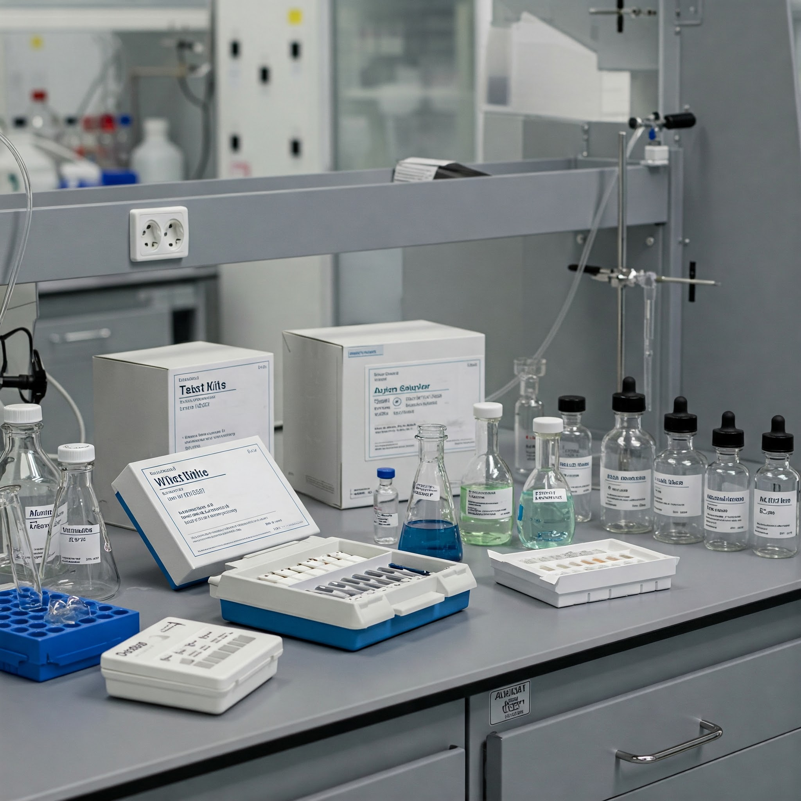
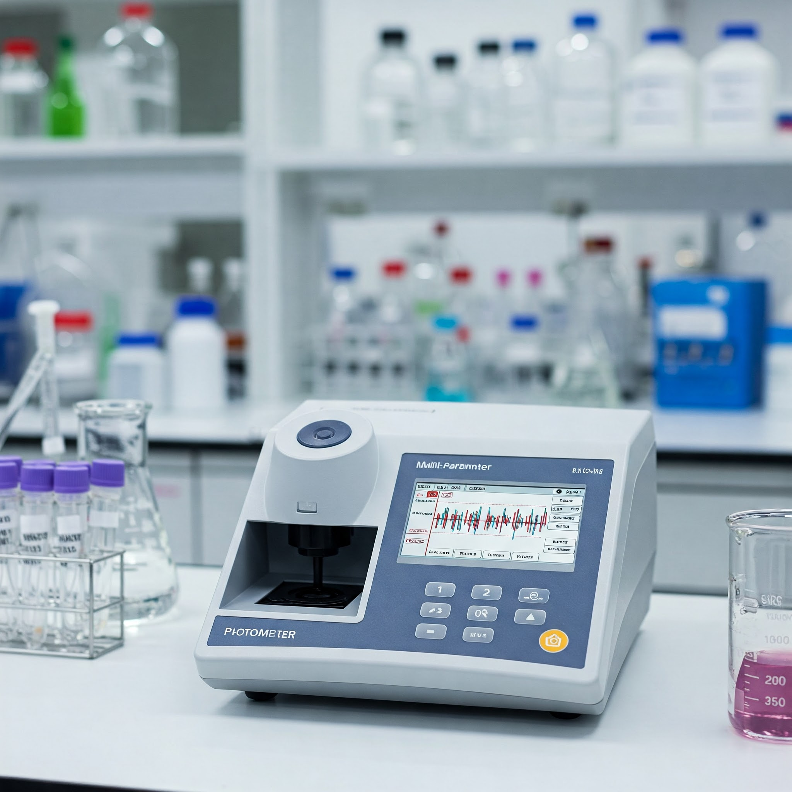
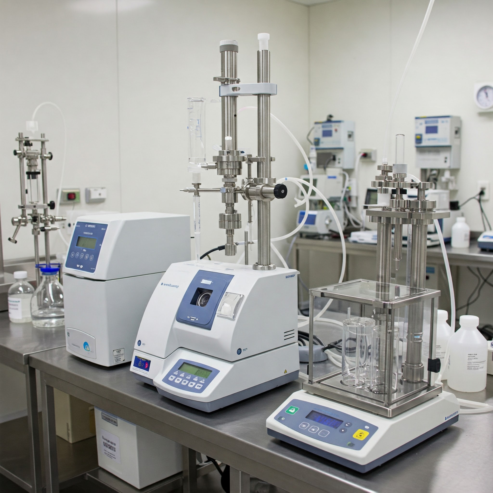
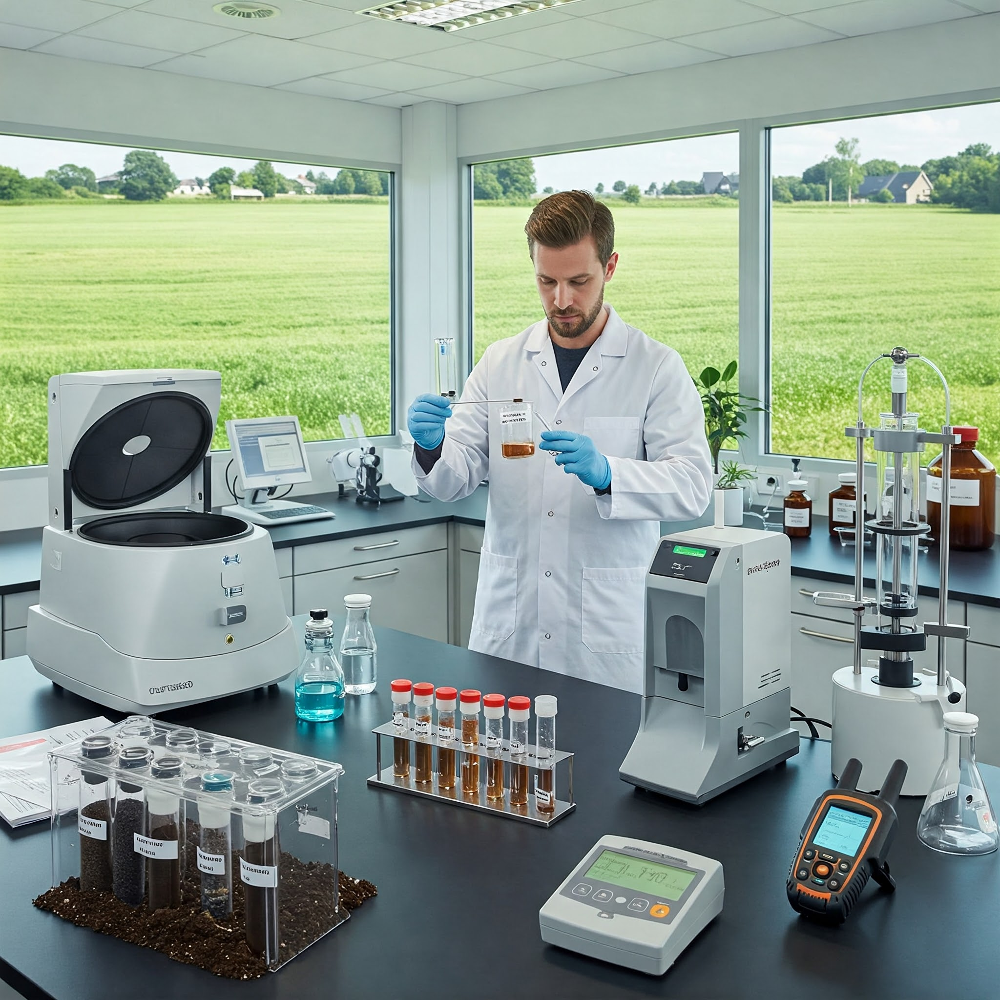
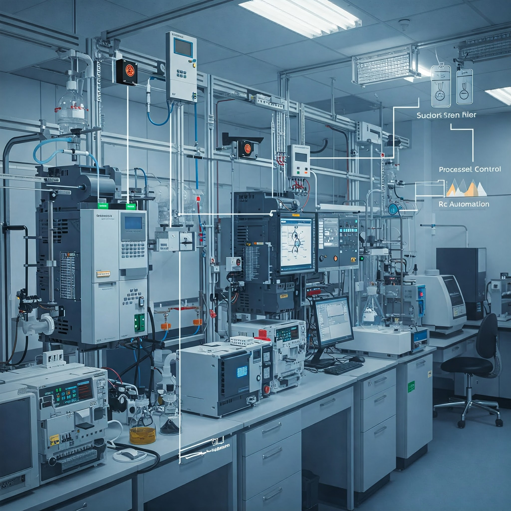

Products
Products
Check Our Product Categories
Water Quality Testing Instruments
- pH Meters (Portable, Benchtop, and Continuous Monitoring).
- EC (Electrical Conductivity) & TDS Meters.
- Dissolved Oxygen (DO) Meters.
- ORP (Oxidation-Reduction Potential) Meters.
- Turbidity Meters.

Chemical Test Kits & Reagents
- Chlorine, Ammonia, Nitrate, Phosphate, and Hardness Test Kits.
- COD & BOD Test Kits.
- Titration Reagents.

Photometers & Spectrophotometers
- Multi-parameter photometers for drinking water, wastewater, and food analysis.

Food & Beverage Testing Equipment
- Milk and Dairy Testers (Lactose, pH, Acidity).
- Wine & Beer Test Meters (pH, Sulfite, Acidity).
- Meat, Cheese, and Cooking Oil Quality Meters.

Agriculture & Soil Testing Equipment
- Soil pH & Moisture Meters.
- Fertilizer Analysis Kits (NPK Testing).
- Hydroponics & Greenhouse Monitoring Systems.

Process Control & Automation
- Online Controllers for pH, ORP, Conductivity, and Dissolved Oxygen.
- Dosing Pumps for chemical automation.

Specialty & Industrial Chemicals
- High-Purity Inorganic Chemicals.
- Biopharmaceutical Manufacturing Ingredients.
- Nanomaterials & Catalysts.
- Custom Chemical Synthesis Services.
Microbiology Testing & Environmental Analysis
- Bacterial & Fungal Culture Media.
- Rapid Microbial Detection Kits.
- Sterility Testing Kits.
- Water & Food Safety Test Kits (Coliform, Legionella, Mycotoxins).